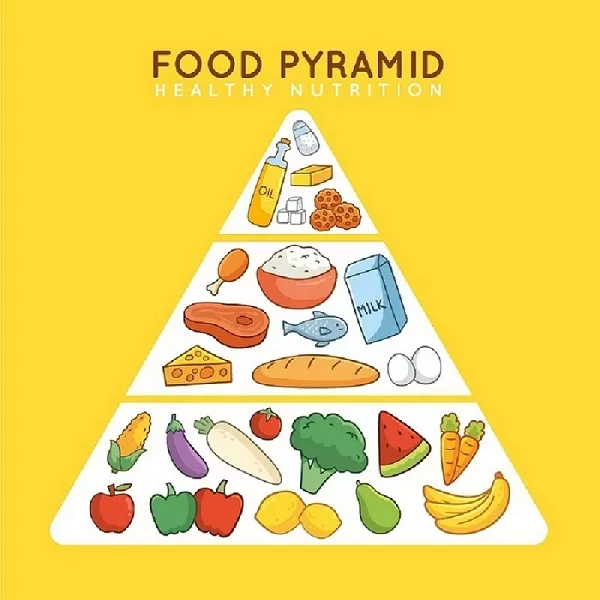

Então como seria uma pirâmide alimentar consistente para a nossa saúde? Louise Light já dizia que a pirâmide ideal seria :alimentos frescos e ricos em fibras como base, em seguida, alimentos ricos em proteínas animais, respectivamente, alimentos ricos em gordura boas, como abacate e amendoim, e por último, alimentos minimamente processados.
